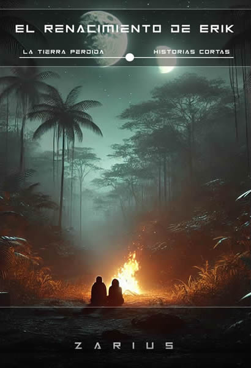

Historia por 1€
El renacimiento de Erik
25–35 min
Historia corta de ciencia ficción
En la aldea tribal Dasanash, en el planeta Elysium, el joven Erik se prepara para enfrentar la Prueba del Renacimiento, un ritual ancestral que define quién merece pertenecer al pueblo.
Pero Erik no es como los demás: percibe el Etheryum mediante una red sensorial viva que pocos logran sentir. Lo que comienza como una cacería iniciática se convierte en un enfrentamiento brutal con un ser casi invisible… y con su propio destino.
Cuando desafía al chamán Thalrik y elige el amor sobre el poder, desata una serie de acontecimientos que lo transformarán para siempre. Porque en las tribus Arsh de Elysium, rebelarse no es desobedecer… es romper el equilibrio.
Detalles
Formato: pdf / digital
Universo: La Tierra Perdida
Tono: Catástrofe, supervivencia, misterio
- Puedes leerlo de forma independiente.
- Este relato es una precuela de la novela «Hijas de Elysium». Ambientado en la facción de los Arsh.